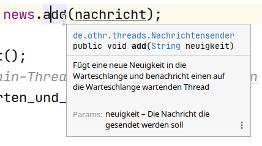
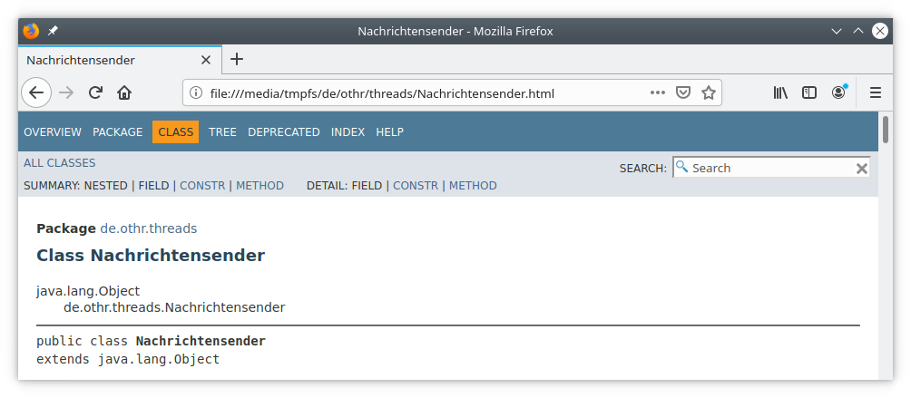
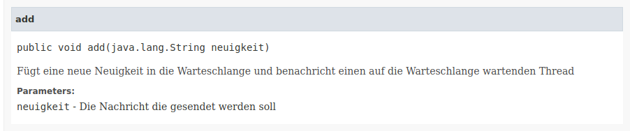

Prof. Dr.-Ing. Johannes Schildgen
johannes.schildgen@oth-regensburg.de
Programmieren 2 (Java)
Kapitel 7: Threads
2020-05-20


Threads
Threads ermöglichen nebenläufige Programmierung
Single-Threaded
- Das Java-Programm läuft sequenziell im Main-Thread
Multi-Threaded
- Zusätzlich zum Main-Thread gibt es weitere Threads.
- Ein Thread ist eine sequenzielle Folge von Anweisungen
- Jeder Thread läuft parallel zu den anderen Threads
- Threads können auf gemeinsame Ressourcen
(z. B. Variablen, Objekte, ...) zugreifen.
Threads in Java: Die Klasse Thread
Runnable (funktionales Interface)
In der run() wird implementiert, was gemacht werden soll.
Thread
Thread(Runnable target)- erzeugt neunen Threadstart()startet die Ausführung des Threads;
Die JVM ruft dessenrun-Methode asynchron auf
und setzt parallel dazu das Programm normal fortgetState()- Zustand des Threads:
NEW, RUNNABLE, BLOCKED, WAITING, TIME_WAITING, TERMINATEDsleep(long millis): Für die angegebene Anzahl von Millisekunden wird der Thread schlafen gelegt (Zustand TIME_WAITING)
Erstellen eines Threads
a) Neue Subklasse von Thread erstellen
run() implementieren, dann start() aufrufen:
Wie viele Threads gibt es in der TimerApp?
- 1
- 2
- 3
- 4
https://frage.space
Erstellen eines Threads
a) Neue Subklasse von Thread erstellen
Auch möglich als anonyme Klasse:
Erstellen eines Threads
b) Thread-Konstruktor ein Runnable übergeben
z. B. in Form eines Lambda-Ausdrucks:
Thread-Synchronisierung
synchronized(obj)-Block
Greifen mehrere Threads auf das gleiche Objekt zu, kann mit synchronized das Objekt gesperrt werden, sodass andere warten müssen.
Was wird ausgegeben?
- 10
- 50
- 100
- 500
https://frage.space
Was würde passieren, wenn nicht synchronized(geldbeutel) gemacht worden wäre?
- Der linke Thread ist noch nicht fertig, der rechte summiert aber schon die Zahlen in der Liste auf
- Eine Exception wird im linken Thread geworfen
- Eine Exception wird im rechten Thread geworfen
- Der linke Thread wird abgebrochen
https://frage.space
Thread-Synchronisierung
synchronized-Methode
public synchronized void mach_was() { ... }steht für:
public void mach_was() { synchronized(this) { ... } }Beispiel ohne synchronized
Ausgabe: AABBCC
Beispiel mit synchronized
Was wird ausgegeben?
- ABC
- ABCABC
- AABBCC
- AABCCB
https://frage.space
Ausgabe: ABCABC
wait() und notify()
In synchronized-Blöcken kann aufgerufen werden:
wait()
Versetzt den Thread in den Status WAITING
und gibt die Sperre auf dem Objekt frei,
so lange bis jemand notify() auf dem Objekt aufruft.
notify()
Benachrichtigt einen auf das Objekt wartenden Thread,
sodass dieser sein Warten beendet.
notifyAll()
Benachrichtigt alle auf das Objekt wartenden Threads,
sodass diese ihr Warten beenden.
Beispiel: Nachrichtensender (1/2)
Beispiel: Nachrichtensender (2/2)
JavaDoc
/** ... */-Kommentarblöcke beschreiben Klassen, Methoden, etc.
Erzeugen einer JavaDoc (HTML-Dateien) auf der Konsole:
javadoc Nachrichtensender.javaIn IntelliJ: Tools → Generate JavaDoc...
JavaDoc
 Kapitelzusammenfassung
- Threads:
Runnable,run,start synchronized-Blöcke und -Methodenwait,notify,notifyAll- JavaDoc